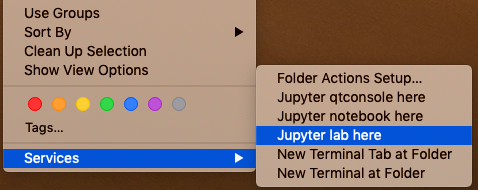
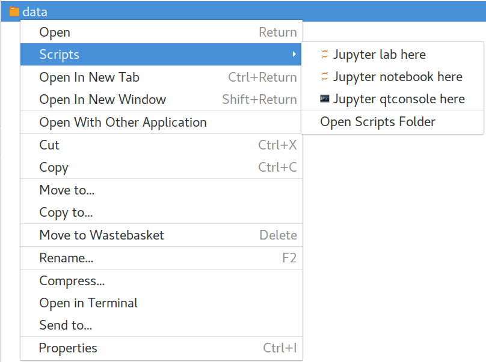

the workshop data (1.9 GB)
Download link 2
Download link 3 (source from Github: slow)
Thank you for registering for the 2020 ACMM HyperSpy workshop on data analysis in materials science. This interactive workshop session will introduce you to modern techniques of data analysis for materials science and microscopy data within the scientific Python environment, with time for questions and individual help. The ultimate goal for the session is that by its end, each attendee feels comfortable using HyperSpy for basic imaging and hyperspectral data analysis, and knows where to look for further help, if necessary.
There are a few useful links in the top header of this page. The first (Workshop Repository) will take you to the git repository containing the notebooks and data we will use during the tutorial. The next two point to the HyperSpy Homepage and User Guide, respectively. The homepage contains general information about the project as a whole, while the User Guide is an extensive piece of documentation that explains how to use HyperSpy for all sorts of analyses. Feel free to refer to these links before and during the workshop session for additional help.
Session Logistics¶
Date: |
Sunday 16th February
|
Time: |
9:00 AM - 5:00 PM
|
Location: |
RSPhys Huxley teaching room
Building 56 (Campus map)
|
About the instructor¶
Eric Prestat (EP) is a Lecturer in Materials Characterisation at
the University of Manchester and the SuperSTEM Laboratory. His
main areas of research focus on the development, implementation
and application of new TEM methodologies - from specimen
preparation, experimental workflow to advanced data processing
and analysis - with the aim to uncover the
structure-property relationships of materials. He is an open
source enthusiast, and started to use the HyperSpy
library as a user during his PhD and made his first code
contribution during his Post-Doc. He has since increased his
contribution and commitment to the development of HyperSpy
and is now a core developer.
(Contact: eric.prestat@manchester.ac.uk)
|
{kind=link}
Agenda¶
Time |
Format |
Leader(s) |
Topic |
|---|---|---|---|
09:00 - 09:15 |
Talk |
EP |
Introduction to Python and HyperSpy |
09:15 - 10:30 |
Practical |
EP |
HyperSpy Basics |
10:30 - 11:00 |
Coffee Break |
||
11:00 - 11:45 |
Practical |
EP |
Model Fitting |
11:45 - 12:30 |
Practical |
EP |
EELS Analysis |
12:30 - 13:30 |
Lunch Break |
||
13:30 - 13:45 |
Talk |
EP |
Intro to Machine Learning in EM |
13:45 - 14:15 |
Practical |
EP |
Machine Learning |
14:15 - 15:00 |
Practical |
EP |
EDS Analysis |
15:00 - 15:30 |
Coffee Break |
||
15:30 - 16:15 |
Practical |
EP |
Big Data Analysis |
16:15 - 17:00
|
Practical
|
EP
|
Running in parallel, self-learning with provided
notebooks and support from the instructor:
- Atomic resolution image analysis
- Scanning electron diffraction analysis
- Pixelated STEM / 4D STEM
|
Pre-workshop instructions¶
Please review this section in advance of Sunday’s workshop session, as it includes instructions for installing HyperSpy and the Jupyter interactive computing environment.
Prerequisites¶
No prior knowledge of Python is required for this workshop but a basic familiarity with Python will be helpful. You will need to follow the instructions below to install HyperSpy using either the Anaconda Python distribution (Windows, Mac, or Linux), or the pre-compiled “bundle” installer (only available on Windows).
Installation¶
At its core, HyperSpy is a third-party library that exists as part of the scientific greater Python ecosystem (as opposed to a stand-alone application). Because of this, installation is slightly more tricky than a normal program, but is not too difficult once you understand the steps required. The two pieces required are a Python distribution (typically pre-installed on Mac and Linux; but not included on by default on Windows), and then the HyperSpy libraries that operate within that Python environment. It is generally adviced not to use the pre-installed system python and to use a separate python distribution for data analysis.
Select one of following instructions, depending on:
if you are not already using a python distribution on your system:
if you are already using a miniconda or anaconda distribution:
Caution
It is important that you install HyperSpy using either the “Bundle” installer, or in an existing Python distribution (not both!). Installing both can work, but will leave you with multiple Python installations on your system, and it will be very confusing to try to solve any issues that arise if you are not experienced with Python.
Obtaining the tutorial data¶
the workshop data (1.9 GB)
Download link 2
Download link 3 (source from Github: slow)
Due to the inclusion of some larger files, it is nearly 2.0 GB in size, so please
ensure that you have enough disk space and bandwidth for the download. Once downloaded,
extract the files into their own folder that is easily accessible. We recommend
a folder in your user’s home directory named hyperspy_tutorial
(i.e. C:\Users\<username>\hyperspy_tutorial on Windows).
Note
If you have limited disk space and/or internet availability, you can download a smaller version of the same data here. This archive is missing three large datasets, and so you will not be able to interactively participate in the Big Data and pyXem sessions. The remaining files are all the same.
Getting started¶
Starting HyperSpy¶
HyperSpy is a python library which can be used in different environment, typically, we will use jupyter software, which comes in different variants:
If you installed using the bundle, this is very simple: you will have a shortcut in the context menu (right click), which will open a notebook from this folder. Make sure to right click on this folder.

Short cut to start the jupyter notebook from the current folder on macOS.¶ |

Short cut to start the jupyter notebook from the current folder on Linux with a Gnome desktop.¶ |
{kind=link}
On windows, you can also use the short cut in the start menu to start the jupyter notebook in your home folder.
{kind=link}
Then you can import HyperSpy by executing in a notebook cell or in the qtconsole:
%matplotlib qt
import hyperspy.api as hs
It may worth checking that your install is running correctly by following the instructions in the the Testing the installation section.
Opening the workshop notebooks¶
For the workshop, we will use notebooks which can be run using the
jupyter notebook or the jupyter lab. The simplest is to use the short
cut in the context menu as explained above in the Starting HyperSpy section.
Alternatively, you can open a terminal (Anaconda prompt on windows) and
navigate to the folder containing the workshop data by using the cd command.
For example, if you saved the data into a folder named hyperspy_tutorial
in your user folder, you would change to that folder with one of the following
commands:
$ cd ~/hyperspy_tutorial
Once in that folder, start the Jupyter Notebook server with the following command:
$ jupyter notebook
Once you start the notebook “server”, a browser window (or new tab) will
automatically open to connect to the local server.
Make sure to leave the terminal window open in the background, as closing it will
shut down the notebook server. If everything has worked as expected, then you
will see a representation of the directory structure within hyperspy_tutorial
on the Notebook homepage. If you do not, you can click through the file structure
displayed on the page to get to the correct folder:
{kind=link}
Once inside one of the folders, simply click on any file with the extension
.ipynb to open the notebook. The notebook will open in a new tab, and can
be interacted with as you need:
{kind=link}
The original Jupyter “homepage” will stay open in the first tab, and you can open as many notebooks as you wish at once (as long as you leave the terminal window open in the background).
Congratulations! You should now be ready for the tutorial. If you ran into any trouble, please try to arrive on Sunday morning a bit early, and we will get you up and running.
Getting Help¶
In addition to the links in the header of this page, there are a few additional resources that can be used to get help with questions you may have about using the software. The support page for the project highlights the best avenues for help, but briefly they are:
The HyperSpy User Guide
The HyperSpy user mailing list
The interactive Gitter chat room
The issue/bug tracker on the HyperSpy Github page
The HyperSpy Demos repository, which contains the foundations of the notebooks presented in this tutorial, together with some additional demos